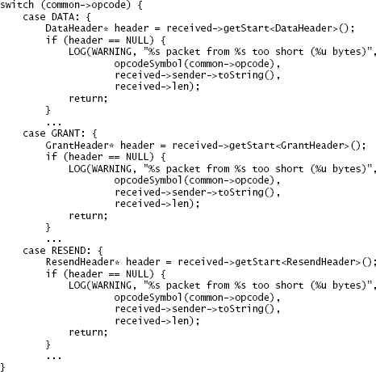
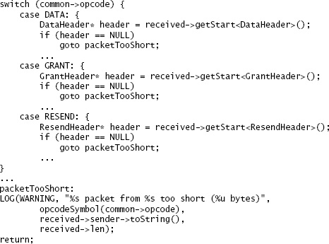
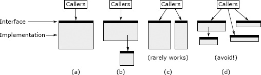

第9章 合在一起更好，还是分开更好？
软件设计中，一个基础问题是：两项功能应放在同一个地方实现，还是分别实现？这个问题适用于系统的所有层级，包括函数、方法、类和服务。例如，提供面向流的文件 I/O 的类，应该包含缓冲功能，还是让独立的类负责缓冲？HTTP 请求的解析应该全部放在一个方法里，还是分散到多个方法，甚至多个类中？本章讨论做这些决定时需要考虑的因素。其中一些因素前面已经讨论过，为了完整起见，这里会重新说明。
决定合并还是分开时，目标是降低整个系统的复杂性，改善模块化程度。乍看之下，最好的办法似乎是将系统分成大量小组件：组件越小，单个组件可能就越简单。不过，拆分本身会引入原先没有的复杂性：
- 组件数量本身就会带来复杂性：组件越多，越难掌握全貌，也越难从中找到需要的组件。拆分通常会增加接口，每个新接口都会增加复杂性。
- 拆分可能增加管理组件的代码。例如，拆分前只使用一个对象的代码，拆分后可能需要管理多个对象。
- 拆分会拉开距离：拆出的组件会比原先离得更远。例如，原本同一个类中的方法，拆分后可能位于不同的类中，甚至位于不同的文件中。开发者更难同时看到这些组件，甚至难以知道它们存在。如果组件确实彼此独立，这种分离有好处：开发者可以一次专注于一个组件，不受其他组件干扰。如果组件之间存在依赖，分离就会产生负面影响：开发者不得不来回查看各个组件。更糟的是，他们可能没有发现这些依赖，从而引入 bug。
- 拆分可能产生重复：原先只出现一次的代码，拆分后可能需要在每个组件中各放一份。
关系密切的代码最适合放在一起。彼此无关的代码通常适合分开。以下迹象说明两段代码存在关联：
- 共享信息。例如，两段代码都可能依赖某种文档的语法。
- 一起使用。使用其中一段代码的人，很可能也要使用另一段。这种关系只有在双向时才有充分说服力。反例是磁盘块缓存：它几乎总会用到哈希表，但哈希表还用于许多不涉及块缓存的场景，这两个模块应该分开。
- 概念上有重叠，可以用一个简单的上位类别包含两段代码。例如，子串查找与大小写转换都属于字符串操作；流量控制与可靠传输都属于网络通信。
- 不看另一段代码，就很难理解其中一段。
本章后面会用更具体的规则与例子，说明何时适合把代码放在一起，何时适合分开。
9.1 共享信息时，放在一起
第5.4节用实现 HTTP 服务器的项目介绍过这个原则。最初的实现用两个不同类中的两个方法读取、解析 HTTP 请求。第一个方法从网络 socket 读取传入请求的文本，存入一个字符串对象；第二个方法解析字符串，提取请求的各个组成部分。这样划分后，两个方法都需要大量了解 HTTP 请求格式。第一个方法原本只想读取请求，但为了识别请求的结束位置，还是得完成大部分解析工作，例如解析首部行，找出包含请求总长度的首部。既然它们共享这些信息，读取与解析请求就最好在同一个地方完成。两个类合并后，代码更短，也更简单了。
9.2 能简化接口时，放在一起
两个或多个模块合为一个模块后，新模块可能拥有更简单或更易用的接口。当原来的各个模块分别实现一个问题的部分解决方案时，这种情况经常出现。上一节的 HTTP 服务器例子中，原先需要接口将第一个方法返回的 HTTP 请求字符串传给第二个方法。方法合并后，这些接口就消失了。
另外，合并两个或多个类的功能后，某些功能可能可以自动完成，大多数使用者无须知道它们。Java I/O 库就有这样的机会。如果合并 FileInputStream 与 BufferedInputStream，默认提供缓冲，绝大多数使用者根本无须知道缓冲的存在。合并后的 FileInputStream 可以提供禁用或替换默认缓冲机制的方法，但大多数使用者不必学习这些方法。
9.3 合并以消除重复
发现同样的代码模式反复出现时，看看能否重新组织代码，消除重复。一种办法是把重复代码提取为独立方法，用方法调用替换各处重复片段。如果重复片段较长，提取后的方法签名简单，这种办法最有效。如果片段只有一两行，用方法调用替换它可能收益不大。如果片段与周围代码的交互复杂，例如访问许多局部变量，提取后可能需要复杂的方法签名，例如大量引用传递参数，这会降低提取的价值。
另一种办法是重构代码，让相关片段只需在一个地方执行。假设正在编写一个方法，需要在几处不同位置返回错误，每次返回前都要执行相同的清理动作，图9.1就是一个例子。如果语言支持 goto，可以把清理代码移到方法末尾，在各个需要返回错误的位置跳转到这段代码，如图9.2所示。通常认为 goto 不好，滥用会让代码难以理解；不过，在这种跳出嵌套代码的场景下，它很有用。

图9.1：这段代码处理不同类型的传入网络包。如果包短于该类型要求的长度，就记录一条日志。这个版本针对几种不同包类型重复编写了 LOG 语句。
switch (common->opcode) {
case DATA: {
DataHeader* header = received->getStart<DataHeader>();
if (header == NULL) {
LOG(WARNING, "%s packet from %s too short (%u bytes)",
opcodeSymbol(common->opcode),
received->sender->toString(),
received->len);
return;
}
...
case GRANT: {
GrantHeader* header = received->getStart<GrantHeader>();
if (header == NULL) {
LOG(WARNING, "%s packet from %s too short (%u bytes)",
opcodeSymbol(common->opcode),
received->sender->toString(),
received->len);
return;
}
...
case RESEND: {
ResendHeader* header = received->getStart<ResendHeader>();
if (header == NULL) {
LOG(WARNING, "%s packet from %s too short (%u bytes)",
opcodeSymbol(common->opcode),
received->sender->toString(),
received->len);
return;
}
...
}

图9.2：重新组织图9.1的代码，让 LOG 语句只保留一份。
switch (common->opcode) {
case DATA: {
DataHeader* header = received->getStart<DataHeader>();
if (header == NULL)
goto packetTooShort;
...
case GRANT: {
GrantHeader* header = received->getStart<GrantHeader>();
if (header == NULL)
goto packetTooShort;
...
case RESEND: {
ResendHeader* header = received->getStart<ResendHeader>();
if (header == NULL)
goto packetTooShort;
...
}
...
packetTooShort:
LOG(WARNING, "%s packet from %s too short (%u bytes)",
opcodeSymbol(common->opcode),
received->sender->toString(),
received->len);
return;
9.4 将通用代码与专用代码分开
如果模块包含可用于多种用途的机制，就应该只提供这一项通用机制。不要在其中加入针对某种用途定制该机制的代码，也不要放入其他通用机制。与通用机制有关的专用代码，通常应放在另一个模块中，一般是与该用途相关的模块。第6章的图形界面编辑器讨论体现了这个原则：最好的设计让文本类提供通用文本操作，由用户界面模块实现界面专用操作，例如删除选区。早期设计在文本类中实现这些专用操作，造成信息泄漏，还增加了接口；新方案消除了这些问题。
危险信号：重复
同一段代码或几乎相同的代码反复出现，说明还没有找到合适的抽象。
一般来说，系统底层更通用，上层更专用。例如，应用最顶层由完全针对该应用的功能组成。分离通用代码和专用代码的办法，是把专用代码往上移到更高层，让底层保持通用。发现一个类对同一抽象同时包含通用功能与专用功能时，看看能否分成两个类：一个包含通用功能，另一个构建在它之上，提供专用功能。
9.5 示例：插入光标与选区
接下来几节用三个例子说明上述原则。其中两个例子最好将相关代码分开，另一个最好合并。
第一个例子是第6章图形界面编辑器项目中的插入光标和选区。编辑器用一条闪烁的竖线，指示用户输入的文本将出现在文档的什么位置。它还用高亮显示一段字符，称为选区，用于复制或删除文本。插入光标始终可见，但有时没有文本被选中。有选区时，插入光标总在选区的一端。
选区与插入光标有一些关联。例如，光标总在选区一端，两者通常一起操作：单击并拖动鼠标会同时设置两者；插入文本时，先删除选中文本（若有），再在光标处插入新文本。用一个对象同时管理两者似乎顺理成章，有个项目组就这么做了。这个对象存储文件中的两个位置，再用布尔值表示哪一端是光标，以及选区是否存在。
不过，这个合并后的对象很别扭。它没有给上层代码带来好处：上层仍须将选区与光标视为不同实体，分别操作。插入文本时，先调用合并对象的一个方法删除选中文本，再调用另一个方法取得光标位置，以便插入新文本。合并对象的实现比独立对象还复杂。虽然不再单独存储光标位置，却必须存储一个布尔值，指出选区哪一端是光标。读取光标位置时，必须先检查布尔值，再选择相应端点。
危险信号：专用与通用混杂
通用机制中还包含针对某种具体用途的专用代码，就出现了这个危险信号。这会让机制更复杂，并在机制与具体用例之间造成信息泄漏：将来修改用例，很可能也需要修改底层机制。
这个例子中，选区与光标的关系还没有紧密到适合合并的程度。修改代码、将两者分开后，使用与实现都更简单了。与必须从合并对象中提取选区和光标信息相比，独立对象提供了更简单的接口。光标的实现也简化了，因为现在直接表示光标位置，无须再通过选区和布尔值间接表示。实际上，修改后的版本没有为选区或光标定义专门的类，只引入一个新的 Position 类表示文件中的位置，即行号和行内字符位置。两个 Position 表示选区，一个表示光标。Position 在项目中还有其他用途。这也展示了第6章所说的较底层但更通用的接口的好处。
9.6 示例：独立的日志类
第二个例子涉及学生项目中的错误日志。某个类包含几段这样的代码：
try {
rpcConn = connectionPool.getConnection(dest);
} catch (IOException e) {
NetworkErrorLogger.logRpcOpenError(req, dest, e);
return null;
}
代码在发现错误的位置不直接记录日志，转而调用专门错误日志类中的方法。这个类定义在同一个源文件的末尾：
private static class NetworkErrorLogger {
/**
* Output information relevant to an error that occurs when trying
* to open a connection to send an RPC.
*
* @param req
* The RPC request that would have been sent through the connection
* @param dest
* The destination of the RPC
* @param e
* The caught error
*/
public static void logRpcOpenError(RpcRequest req, AddrPortTuple dest, Exception e) {
logger.log(Level.WARNING, "Cannot send message: " + req + ". \n" +
"Unable to find or open connection to " + dest + " :" +
e);
}
...
}
注释译文：输出尝试打开连接以发送 RPC 时所发生错误的相关信息。req：原本要通过该连接发送的 RPC 请求；dest：RPC 的目的地址；e：捕获的错误。
NetworkErrorLogger 类还包含 logRpcSendError、logRpcReceiveError 等方法，分别记录不同类型的错误。
这种分离增加了复杂性，没有带来好处。日志方法很浅：大多只有一行代码，却需要大量文档。每个方法只在一处调用。日志方法与调用点高度依赖：阅读调用代码的人很可能跳到日志方法中，确认记录的信息是否正确；阅读日志方法的人也可能跳回调用位置，了解方法的用途。
这个例子最好删去日志方法，把日志语句放到发现错误的位置。这样代码更易读，也消除了日志方法所需的接口。
9.7 示例：编辑器的撤销机制
第6.2节的图形界面编辑器项目要求支持多级撤销与重做，范围包括文本自身的修改，以及选区、插入光标、视图的变化。例如，用户选中一段文本并删除，滚动到文件另一个位置，再执行撤销，编辑器必须恢复到删除前的状态：恢复被删除的文本，重新选中它，并让选中文本在窗口中可见。
一些学生项目把整套撤销机制放进文本类。文本类维护一个列表，记录所有可撤销的变更；文本发生变化时，自动添加条目。选区、插入光标和视图发生变化时，用户界面代码调用文本类中的其他方法，为这些变化添加撤销条目。用户请求撤销或重做时，界面代码调用文本类的方法，处理撤销列表中的条目。涉及文本的条目会更新文本类的内部状态；涉及选区等其他内容的条目，则由文本类回调用户界面代码，执行撤销或重做。
这种方案让文本类的功能组合很别扭。撤销与重做的基础是一种通用机制：管理已执行动作的列表，并在撤销、重做时逐项处理。这部分代码位于文本类中，同处的还有针对文本、选区等具体对象执行撤销与重做的专用处理代码。选区和光标的专用撤销处理代码与文本类的其他内容无关，却造成了文本类与用户界面间的信息泄漏，还要求两个模块增加方法，来回传递撤销信息。将来系统加入一种新的可撤销实体，就必须修改文本类，包括增加该实体的专用方法。另外，通用撤销机制与类中的通用文本功能也没有多少关系。
把撤销与重做机制中的通用部分提取出来，放入独立的类，可以解决这些问题：
public class History {
public interface Action {
public void redo();
public void undo();
}
History() {...}
void addAction(Action action) {...}
void addFence() {...}
void undo() {...}
void redo() {...}
}
这个设计中，History 管理一组实现 History.Action 接口的对象。每个 History.Action 描述一个操作，例如插入文本或改变光标位置，并提供撤销、重做该操作的方法。History 不知道动作中存储了什么信息，也不知道它们如何实现 undo 和 redo。History 维护历史列表，描述应用整个生命周期内执行过的全部动作；它提供 undo 和 redo 方法，响应用户的撤销、重做请求，向后或向前遍历列表，调用各个 History.Action 的 undo 或 redo 方法。
History.Action 是专用对象：每种对象理解一种特定的可撤销操作。它们在 History 类之外实现，放在理解相应动作的模块中。文本类可以实现 UndoableInsert 和 UndoableDelete 对象，描述文本插入与删除。每次插入文本时，文本类创建一个新的 UndoableInsert 对象，描述这次插入，再调用 History.addAction 把它加入历史列表。编辑器的用户界面代码可以创建 UndoableSelection 和 UndoableCursor 对象，描述选区和插入光标的变化。
History 还允许将动作分组，例如用户只请求一次撤销，就能恢复被删除文本、重新选中它，并重新定位插入光标。动作分组有多种办法；History 使用栅栏，即放在历史列表中、用于分隔各组相关动作的标记。每次调用 History.redo，就沿历史列表向后移动，撤销动作，直到遇到下一个栅栏。栅栏的位置由上层代码调用 History.addFence 决定。
译注：原文此处写作
History.redo，但随后的“向后移动、撤销动作”描述对应undo；这里保留原文方法名并注明这一处不一致。
这个方案把撤销功能分成三类，各自在不同位置实现：
- 管理、分组动作并调用撤销与重做操作的通用机制，由
History实现。 - 具体动作的细节，由多种类实现，每个类只理解少数几种动作。
- 动作分组策略，由高层用户界面代码实现，以提供正确的应用整体行为。
实现每一类时，都无须理解其他类别。History 不知道撤销的是什么动作，可以用于多种应用。每个动作类只理解一种动作；History 和动作类都无须知道分组策略。
这次设计中重要的决定，是分离撤销机制中的通用部分和专用部分，把通用部分独立放入一个类。完成这一步，其余设计便自然形成了。
注意：将通用代码与专用代码分开的建议，针对的是同一种机制。例如，专用撤销代码（如撤销文本插入的代码）应该与通用撤销代码（如管理历史列表的代码）分开。不过，把一种机制的专用代码与另一种机制的通用代码放在一起，往往合理。文本类就是例子：它实现通用文本管理机制，同时包含与撤销有关的专用代码。撤销代码之所以专用，是因为它只处理文本修改的撤销。把它放入 History，与通用撤销基础设施合在一起并不合理；放在文本类中则合理，因为它与其他文本功能密切相关。
9.8 拆分与合并方法
何时拆分的问题同样适用于方法。有些时候，把已有方法分成多个小方法是否更好？两个小方法是否应该合为一个大方法？长方法通常比短方法难理解，许多人认为，仅长度就足以成为拆分理由。课堂上常给学生硬性标准，例如：“超过20行的方法都要拆分！”
不过，仅凭长度通常不足以判断该拆分。总体而言，开发者往往拆得太多。拆分会引入额外接口，增加复杂性；还会将原方法的各部分分隔开，如果这些部分实际有关联，代码就更难读。只有能简化整个系统时才应该拆分方法；下面会讨论这样的情况。
长方法未必不好。假设方法包含五段依次执行的代码，每段20行。如果各段相对独立，阅读时可以逐段理解，把每段放进独立方法并没有多少好处。如果各段交互复杂，更应该放在一起，让读者同时看到全部代码；若分散在不同方法中，读者就得来回翻看才能理解它们如何协作。只要签名简单、易于阅读，数百行的方法也可以很好。这样的方法很深：功能多，接口简单，这是好事。

图9.3：方法（a）可以通过提取子任务来拆分（b），也可以把功能划为两个独立方法（c）。如果拆分后得到浅方法，如（d），就不应拆分。图中 Callers 为调用者，Interface 为接口，Implementation 为实现；（c）的 rarely works 意为“很少奏效”，（d）的 avoid! 意为“避免这样做”。
设计方法时，首要目标是提供清晰、简单的抽象。每个方法应该完成一件事，并把它完整做好。接口应清晰、简单，让使用者无须在脑中记住很多信息就能正确使用。方法应该深：接口远比实现简单。满足这些特点后，方法长短大概就不重要了。
只有整体上能得到更清晰的抽象，拆分才有意义。图9.3展示了两种方式。最好的一种是提取子任务为独立方法，如（b）。拆分后，子方法包含子任务，父方法包含原方法剩余部分，父方法调用子方法。新父方法的接口与原方法相同。如果子任务能与其余部分清楚分开，这样拆分就合理：读子方法的人无须了解父方法，读父方法的人无须了解子方法的实现。这通常意味着子方法相对通用，可以想象除了父方法之外，还有别的方法使用它。如果这样拆完后，为了理解两者如何协作，仍需在父子方法间来回查看，就出现了“连体方法”危险信号，说明这次拆分可能不合适。
第二种方式是分成两个独立方法，都向原方法的调用者公开，如图9.3（c）。原方法承担了多件关系不密切的事，导致接口过于复杂时，这种方式才合理。可以把功能分成两个或多个小方法，每个只承担原方法的一部分功能。拆分后的每个接口都应该比原接口简单。理想情况下，大多数调用者只需调用两个新方法中的一个；如果必须两者都调用，就会增加复杂性，这次拆分合理的可能性就更小。新方法的职责会更集中。如果它们比原方法更通用，即可以想象在其他情境中单独使用，这是好迹象。
图9.3（c）的拆分很少合理，因为调用者原先只需面对一个方法，现在要面对多个。这样拆分有可能得到几个浅方法，如（d）。如果调用者必须逐个调用各个方法，并在方法间来回传递状态，这种拆分就不好。考虑采用（c）时，应以它是否方便调用者为判断依据。
有时合并方法也能简化系统。例如，将两个浅方法变成一个更深的方法；消除重复代码；消除原方法之间的依赖或中间数据结构；改善封装，让原先散布在多处的知识集中在一处；或者像第9.2节讨论的那样，提供更简单的接口。
危险信号：连体方法
每个方法都应可以独立理解。如果理解一个方法的实现必须同时理解另一个方法的实现，就出现了危险信号。其他情境也有这种问题：两段代码位置分开，却必须相互参照才能理解，同样是危险信号。
9.9 结论
决定拆分还是合并模块，应依据复杂性。选择信息隐藏最好、依赖最少、接口最深的结构。